Articles sportifs
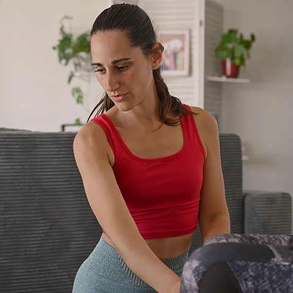
Des articles riches et ciblés pour progresser à votre rythme. Techniques, conseils pratiques, erreurs à éviter, idées de séances… que vous soyez débutant ou confirmé, vous trouverez ici de quoi structurer vos entraînements et rester motivé dans la durée.
🎬 Squats & Renforcement des Cuisses
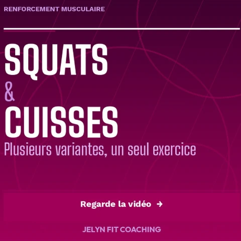
Les inscriptions pour les cours de Pilates de l’année prochaine ouvrent le 6 juin 💛 Pour découvrir la méthode et l’ambiance des cours, des cours...
🎬 Tu fais des abdos… mais tu pousses vers le bas
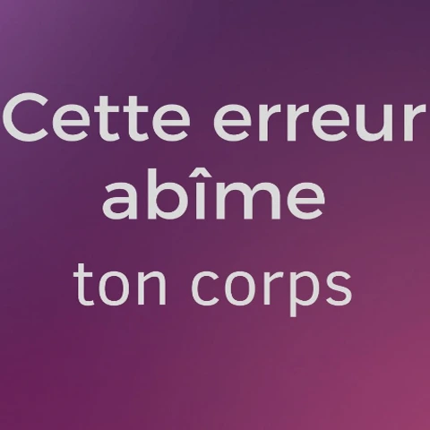
Sans t’en rendre compte ? Et le pire ? On ne te l’a probablement jamais dit 😤 C’est l’erreur la plus courante - gonfler le ventre, pousser vers le bas...
Et si cette année, tu prenais enfin du temps pour toi ?
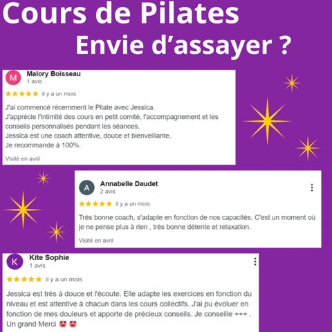
Les inscriptions pour les cours de Pilates de l’année prochaine ouvrent le 6 juin 💛 Pour découvrir la méthode et l’ambiance des cours, des cours...
Le sport intensif
n’est pas
la solution
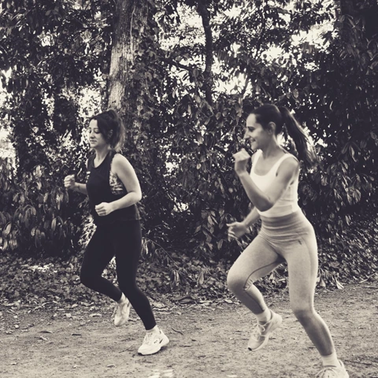
Faire plus ne veut pas dire faire mieux. 👉 Trop de sport = fatigue + douleurs + abandon Ce qui fonctionne vraiment : ✔️ régularité ✔️ adaptation...
Le muscle :
ton allié
anti-douleur
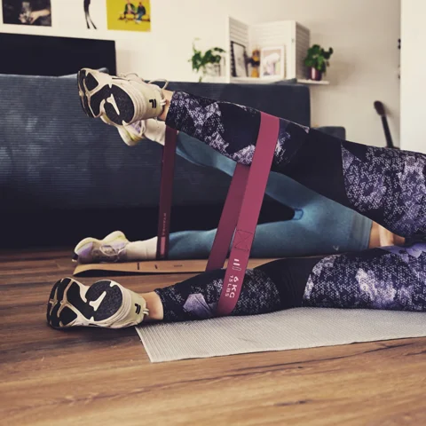
Beaucoup de femmes ont peur du
renforcement musculaire.
Et pourtant…
Le muscle protège tes articulations...
Bouger, c’est la vie. Ne plus bouger, la fin
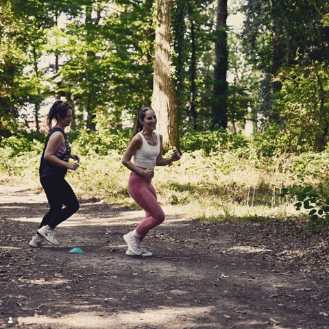
Le corps humain est fait pour bouger. Pas pour rester figé. Pas pour s’enfermer dans la peur de la douleur. Quand on ne bouge plus...
Pourquoi ton corps perd du muscle dès 40 ans ?

On entend souvent que “c’est normal de perdre du muscle avec l’âge”. Mais ce n’est pas une fatalité. ⚠️ La sarcopénie désigne la perte...
NOUVEAU créneau Pilates - Cours de découverte
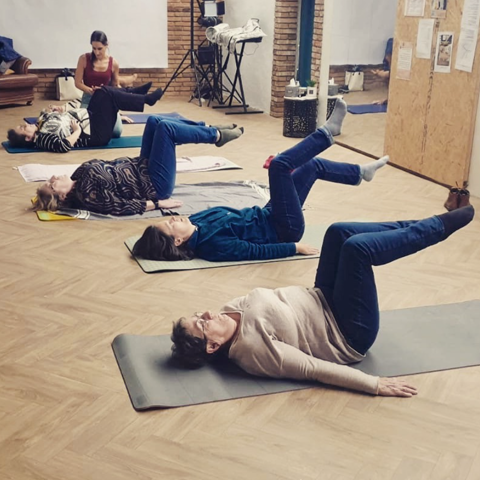
Petit rappel pour celles qui hésitent encore 💛
J’ouvre un nouveau créneau de Pilates le mardi soir 🧘♀️...
Avec mes douleurs, je ne peux pas faire de sport
Et si le vrai problème n’était pas le mouvement…
mais le mauvais mouvement ?
Quand on est en surpoids ou qu’on...
Les bienfaits du Pilates : renforcer le corps en douceur
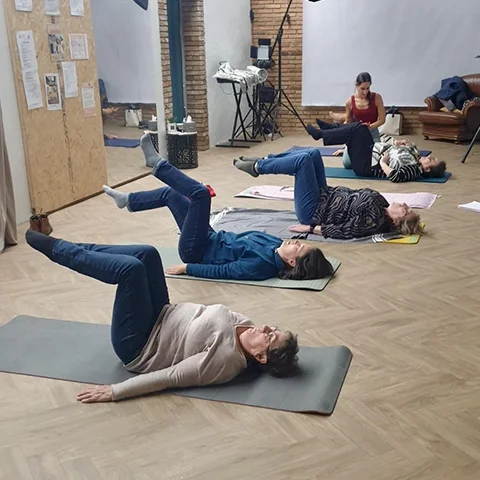
Le Pilates est une méthode d’entraînement douce et efficace, accessible à tous. Il vise à renforcer les muscles profonds, améliorer la...
Nouveau
créneau
Pilates !
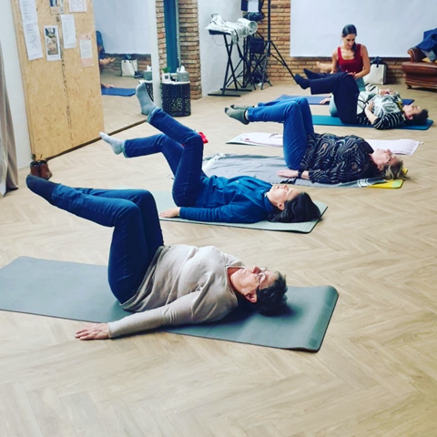
À partir de janvier, j'ouvre un cours de Pilates le mardi soir, de 18h45 à 19h45, à l’école de la voix sido. Les inscriptions sont ouvertes et le...
Cours de Pilates
Vendredi
matin
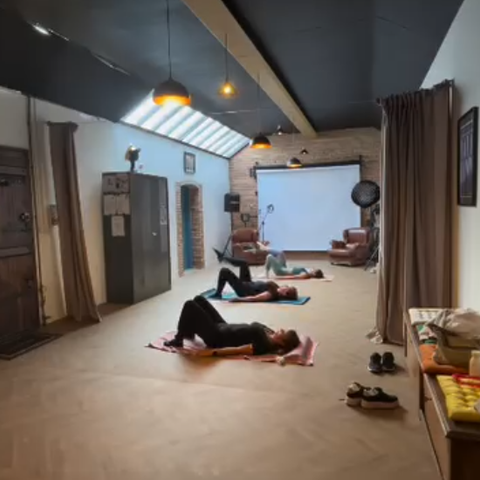
🕘 9h30 - 10h30
📍 École de la Voix Sido
Il reste encore quelques places disponibles...
3 raisons pour lesquelles le Pilates améliore la posture...
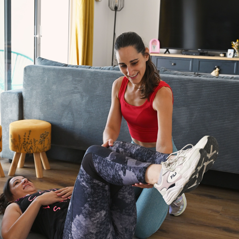
1️⃣ Renforcement des muscles profonds : le Pilates cible la sangle abdominale et les muscles stabilisateurs pour un...
Pourquoi le sport
transforme
votre vie

Bouger, ce n’est pas seulement pour la forme : c’est un véritable allié pour votre corps et votre esprit. Découvrez comment...